Удобное ведение личных финансов
Qute Money — личный пет-проект, мобильное приложение для ведения личных финансов. Главные особенности — минималистичность интерфейса и удобство добавления записей, а также полезная инфографика для оценки уровня потребления при планировании семейного бюджета.
UI/UX дизайн создан отдельным специалистом в Figma при моём согласовании ключевых решений; разработка — моя зона ответственности.
Главная цель проекта для меня — получение дополнительного опыта коммерческой разработки на Qt6 и совершенствование навыков реализации интерфейсов на QML в связке с C++.
Приложение планируется к релизу на платформе Android на площадках RuStore и Play Market, а после оптимизаций и доработок — в App Store. В будущем возможна монетизация для дополнительного источника дохода.
Фокус на современном UI/UX и удобстве: добавление трат должно быть быстрым в повседневных сценариях. Минимум кликов, ключевая информация на виду, удобство одной рукой и на ходу.
Часто используемые элементы вынесены на видное место; данные по уже внесённым расходам используются для подсказок — например, популярные категории под рукой, повторяющиеся траты в категории предлагаются автоматически.
Экраны приложения и интерфейс.
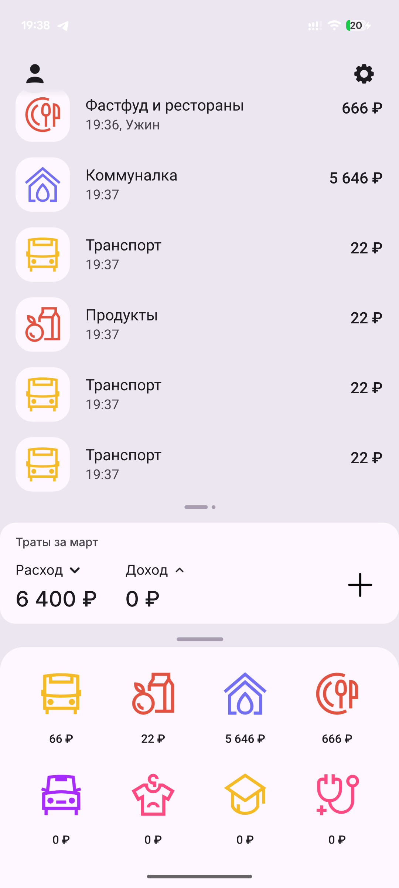
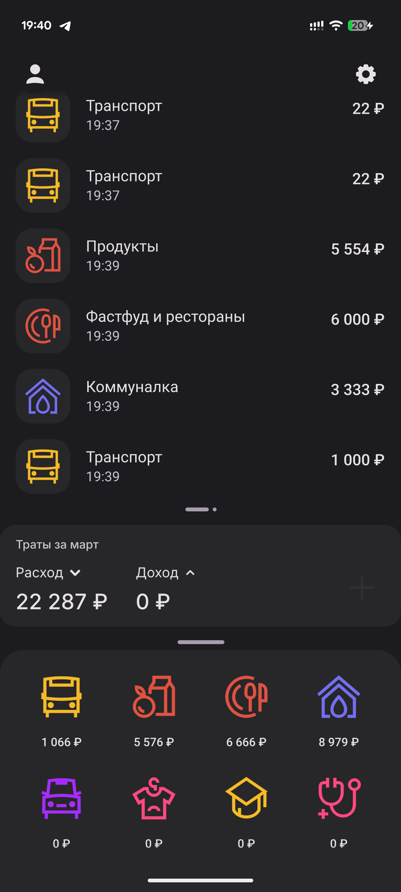
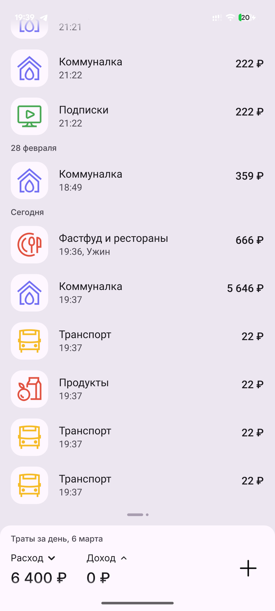
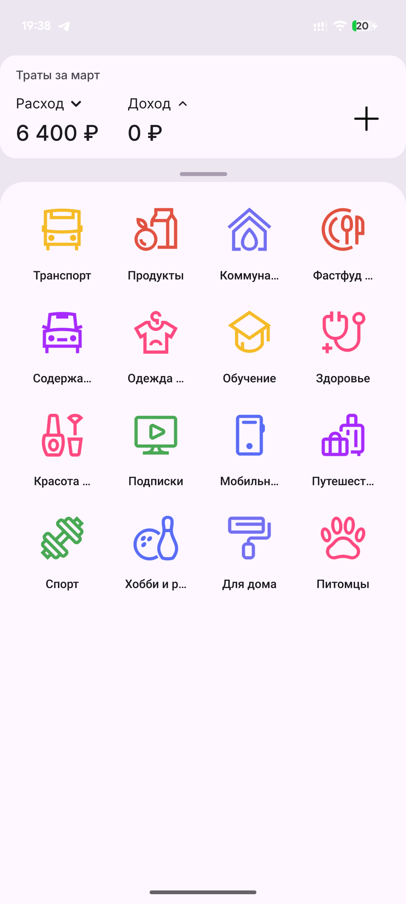
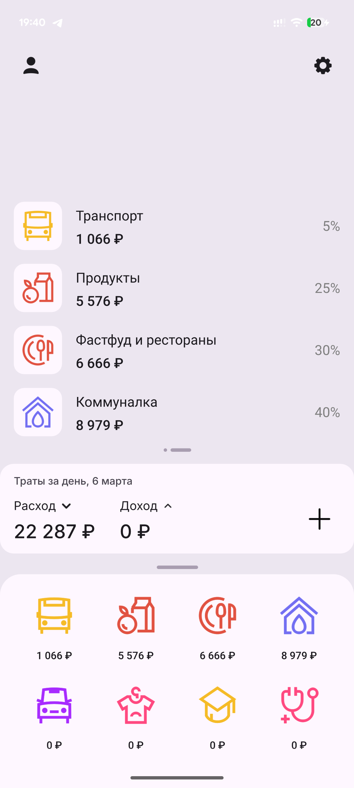
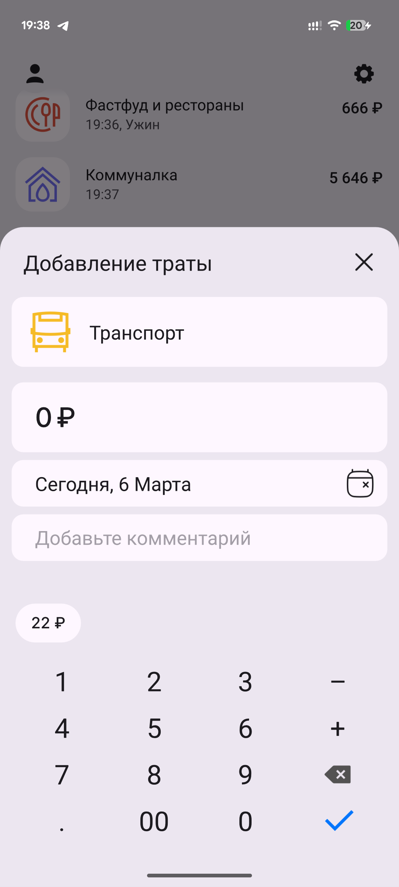
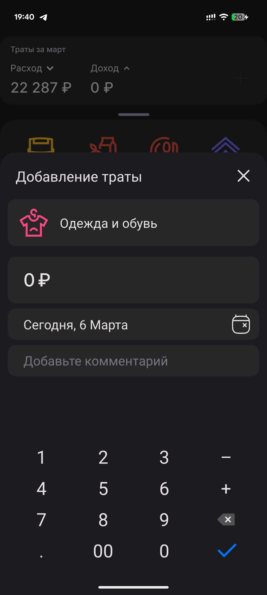
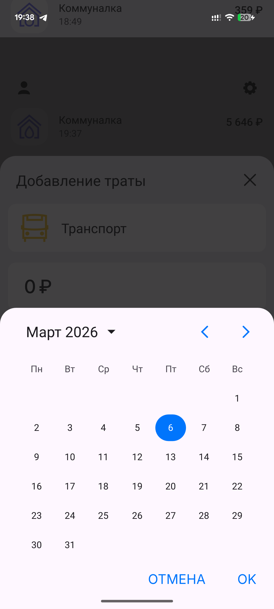
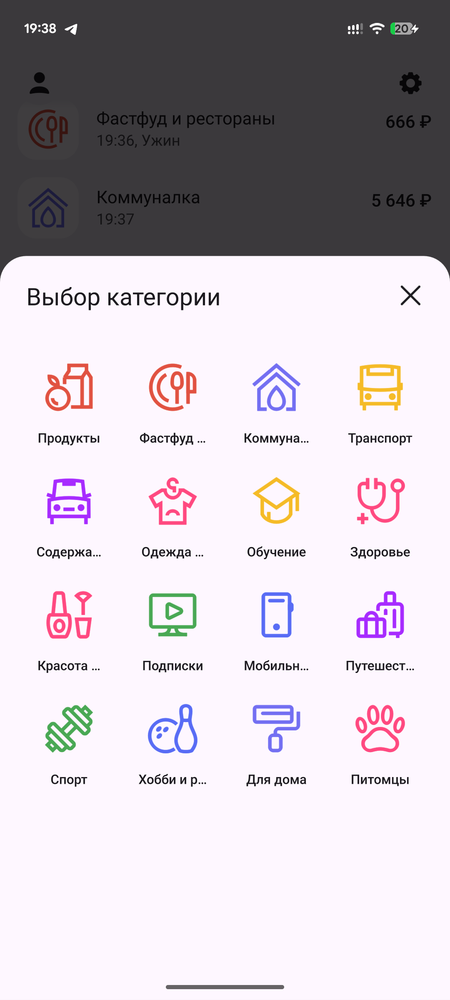
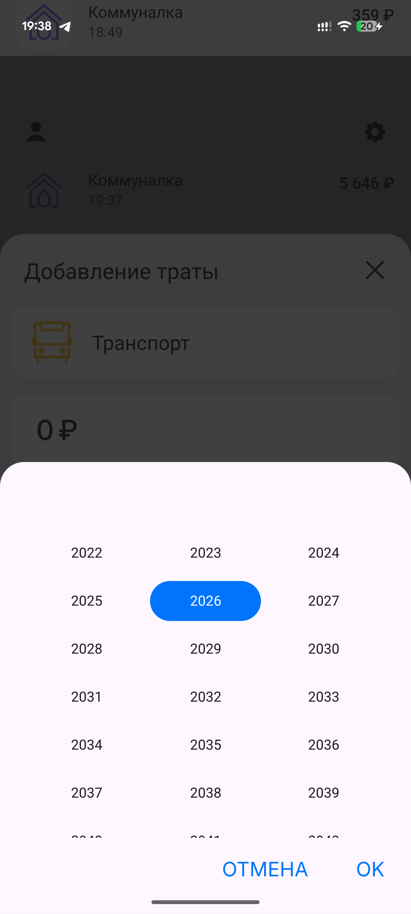
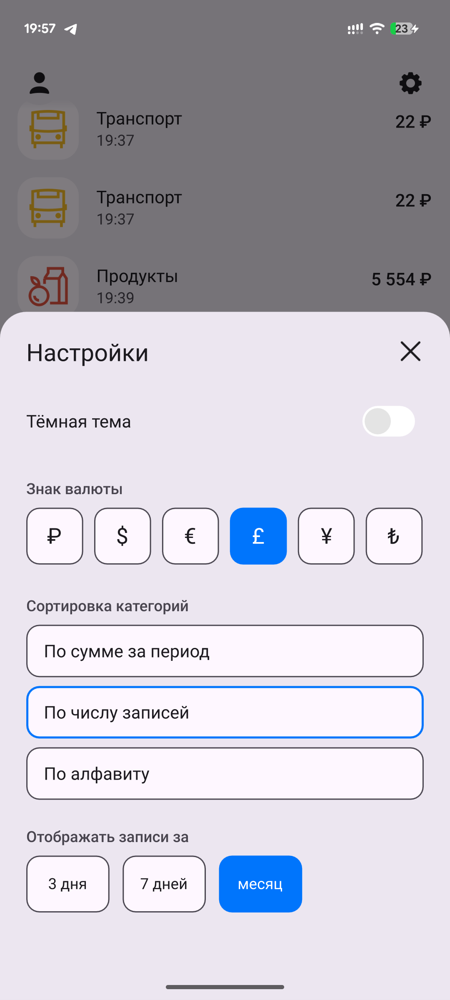
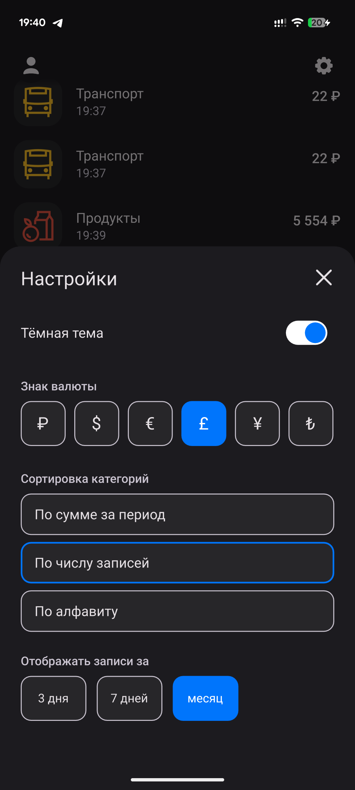
Демонстрация интерфейса и сценариев использования.
Демо-видео приложения